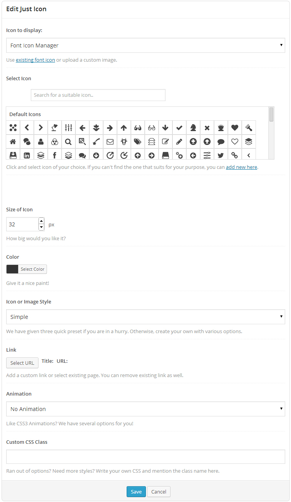
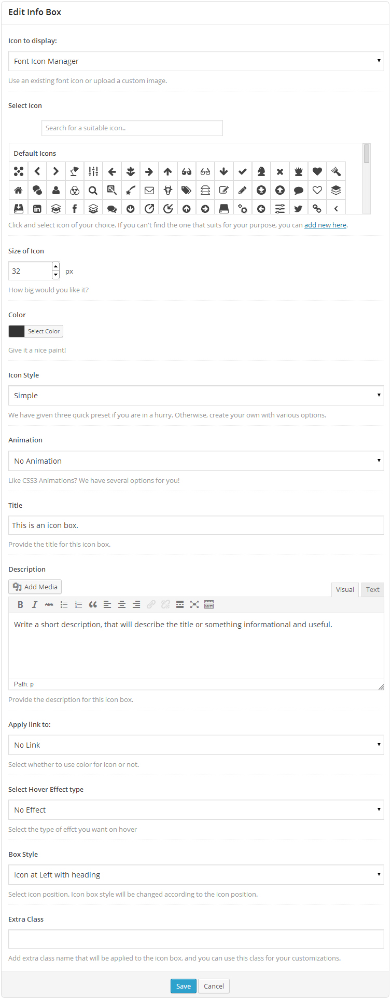
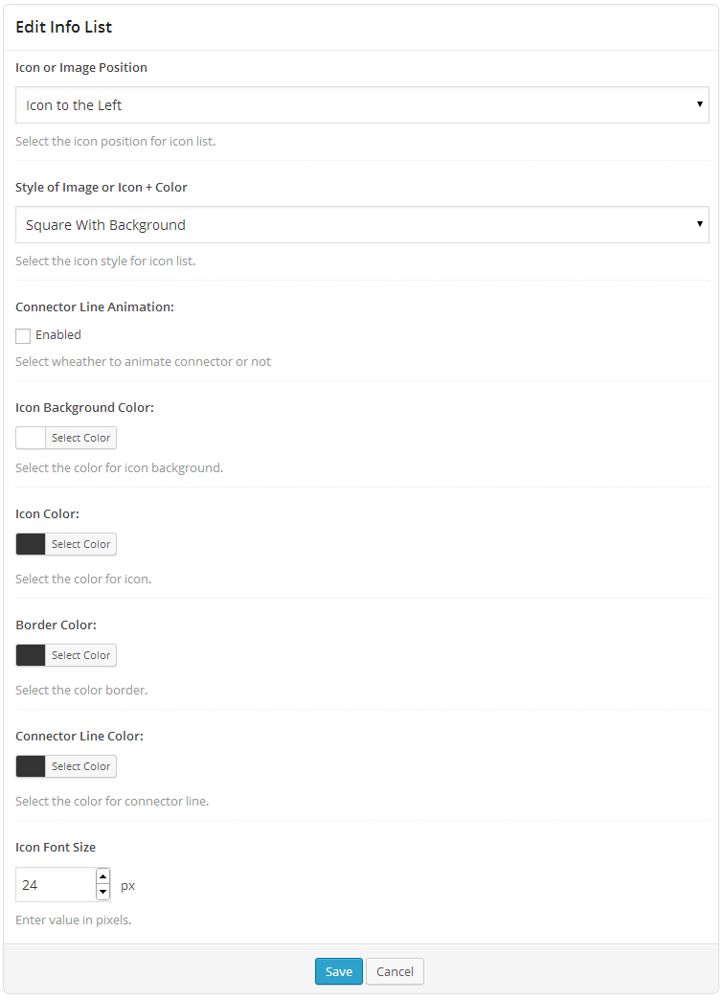
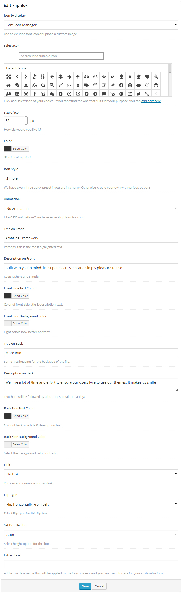
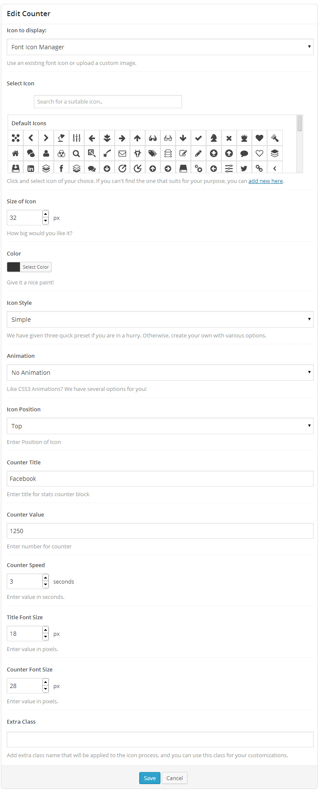
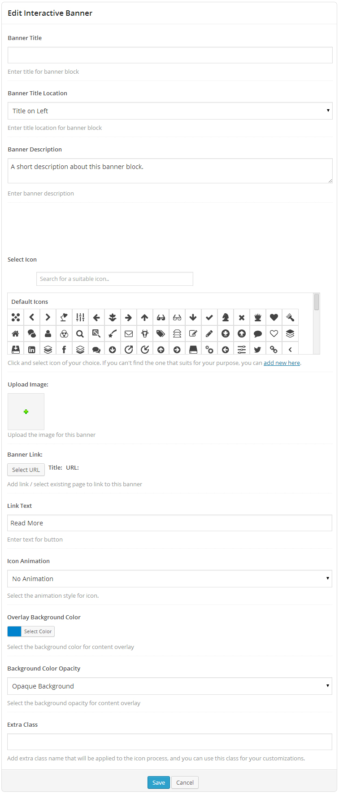
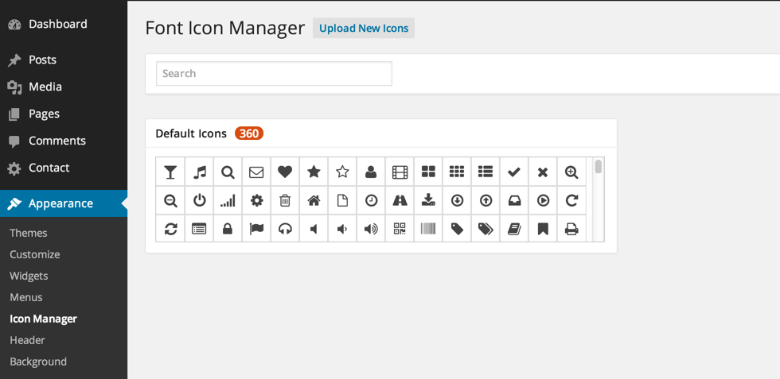

Ultimate Visual Composer Addons
Extend Visual Composer and add more power to it!
- created: 02/17/2014
- latest update: 02/17/2014
- by: Brainstorm Force
Thank you for buying Ultimate Visual Composer Addons.
If you have any questions or need any support, please message us through the contact form on our codecanyon profile here
In order to get this product working flawlessly, please ensure that all the minimum requirements as specified below will be satisfied.
-
Wordpress - Version 3.6 & above.
-
PHP - 5.2 or above
-
WPBakery Visual Composer - Version 3.7.2 & above
Installing Through Dashboard:
- Go to Plugins -> Add New -> Upload
- Choose the installable ZIP file (that you have download in your computer from codecanyon) Upload that file.
- Now, click on activate link to activate the plugin.
Installing Through FTP:
- Extract the installable ZIP file (that you have download in your computer from codecanyon) Upload the extracted folder into wp-content/plugins directory.
- Activate the plugin through the 'Plugins' menu in WordPress.
After successful activation:
- Settings => Visual Composer => General Settings
- Select the appropriate user group and ensure elements you need are enabled. Only the enabled elements will come in Visual Composer Editor.
- Add new page or edit the existing one
- Click Visual Composer button to start designing custom pages from their editor. Screenshot.
- The Visual Composer Advanced Editor page will look something like this.
Click "Add Element" to start using the elements directly or click "Add row" to define your grid structure before hand.
- If you click "Add Element" in Visual Composer a jQuery popup box will appear. Screenshot 1 / Screenshot 2
- Click on "Ultimate VC Addons" which is a dedicated tab for our plugin. A list of all the elements that our plugin provides will appear.
- Select the element that you want to use.
You can use this element to integrate a simple icon (font & image, both kinds) in your page and use it as you want.
Backend Options -

An icon with title & description.
Backend Options -

Helpful to design an advanced list in which every list item may include an icon, title & description.
Backend Options -

This element combines the power of "Info Box" & "Call to Action" block altogether. On the front, it would look like a normal Info Box but as visitor hovers on the block, it flips with a cool CSS3 effect and shows a Call to Action section, provoking him to take a call.
Backend Options -

Want to show your milestones, achievements and any other numeric statistics with animated numbers? This element will help!
Backend Options -

This element will display those image blocks in a nicer & interactive way with a title & description that comes on hover.
Backend Options -

By default, we ship this plugin with Entypo Icon font. But if you would like, you can upload new Icon fonts or delete existing ones that you might have added already.
In the appearance menu of WordPress, you will find a new menu "Icons Manager" as you see below

That's where you can upload new set of icons / delete existing set of icons. There is a real time search box available as well so you can cross check and see if you have the icon available that you are looking for.
To upload new set of icons -
- Go to IcoMoon App here
- Shortlist the icons by clicking on individual ones that you like. You have a real time search feature available as well if that makes your job easier.
- If you still can't find the icons that you want in the set, click on the link "More Icon Sets..." at the bottom of the page where you can load more font icon libraries in your selection area where you shortlist and select your favorite icons (in step 2) Screenshot
- Once you shortlist the icons for your set, click on the button "Font" in the fixed menu at the bottom of page. Screenshot
- The page that come after you click "Font" button in the last page is where you can review, edit and customize your selected icons.
- Once you are satisfied with your selection, just hover on the button "Download". Don't click there as of yet! Screenshot
- Give a unique name to your shortlisted set. Again - make it a unique name and different than what you already have on your website so that they won't conflict. Once you gave it a name, click the "Download" button.
- A ZIP file will be downloaded.
- Now - go back to your website's "Icons Manager" area.
- Click "Upload New Fonts" http://d.pr/i/wDkL then "Upload Files" then Select the ZIP file that we downloaded from IcoMoon & upload it. Screenshot
- Finally - click "Insert Fonts Zip File" button at the right bottom and your new font will be uploaded quickly.
To delete existing set of icons -
Just click the "Delete Icon Set" button.
Screenshot
To use the newly uploaded fonts in Visual Composer -
No action is really necessary at your side. Just refresh the editor page and newly uploaded icons will load on your Visual Composer.
{kind=link}
{kind=link}
{kind=link}
{kind=link}
{kind=link}
{kind=link}
{kind=link}
{kind=link}
{kind=link}
{kind=link}